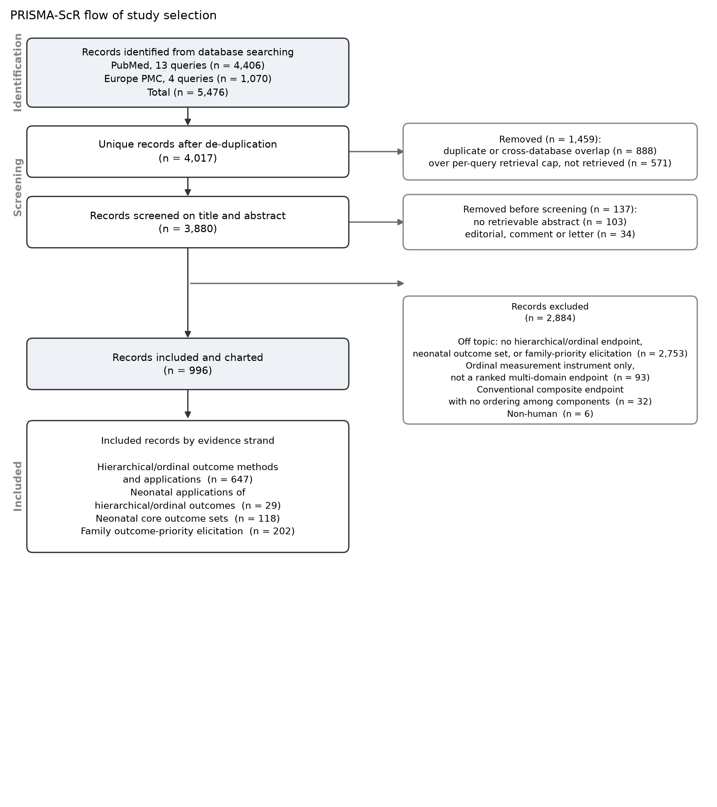
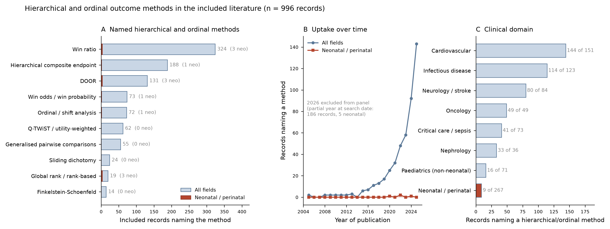
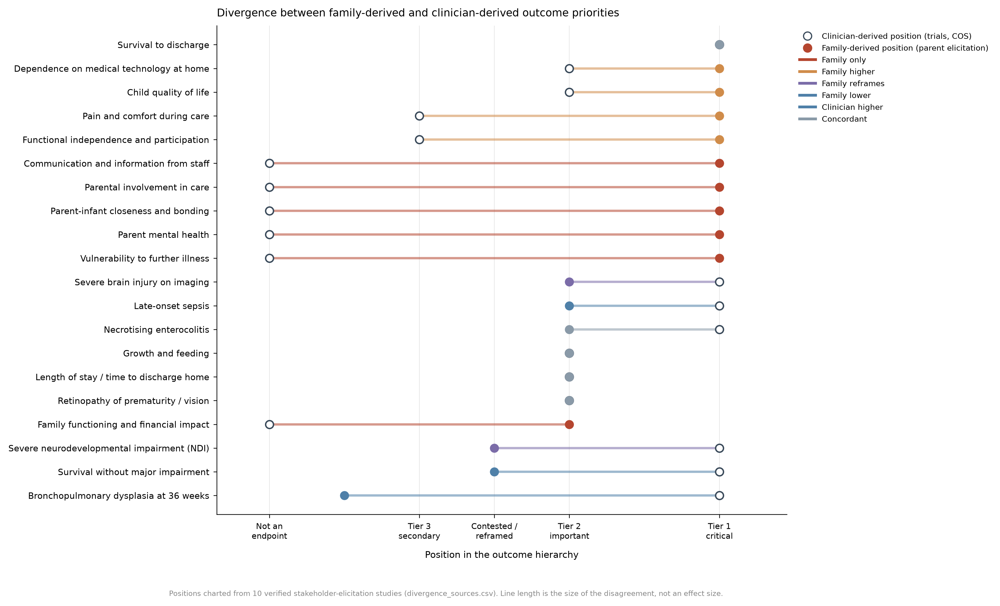

Hierarchical, ordinal and ranked composite outcomes in clinical trials, and the place of family priorities in neonatal outcome selection
This review is reported in accordance with PRISMA-ScR (Preferred Reporting Items for Systematic reviews and Meta-Analyses extension for Scoping Reviews).
Background. Neonatal trials in extremely preterm infants overwhelmingly report a binary composite of death or severe neurodevelopmental impairment. Binary composites weight death and disability equally, discard the ordering between them, and are insensitive to outcomes that families rank highly. Hierarchical and ordinal endpoints — desirability of outcome ranking (DOOR), the win ratio, generalised pairwise comparisons — preserve that ordering, but their penetration into neonatology has not been quantified.
Objectives. To map (i) which hierarchical, ordinal and ranked composite outcome methods are used in clinical trials and where; (ii) how far these methods have been applied in neonatal and perinatal research; and (iii) how outcome priorities elicited from families compare with those embedded in clinician-derived trial endpoints and core outcome sets.
Methods. PubMed and Europe PMC were searched from inception to August 2026 using 17 queries across four conceptual blocks (hierarchical outcome methods; neonatal applications; neonatal core outcome sets; family and parent priorities). Title/abstract screening applied pre-specified eligibility criteria. Included records were charted for named method, clinical domain, study design and year. Family-versus-clinician priority divergence was mapped against studies that elicited priorities from both groups.
Results. 5,476 records were identified, 4,017 were unique, 3,880 were screened and 996 were included. Records naming a hierarchical or ordinal method rose from 13 in 2018 to 143 in 2025. The win ratio was the most frequently named method (324 records), followed by hierarchical composite endpoints (188) and DOOR (131). Cardiovascular trials accounted for 144 records naming a method. 9 of 996 included records were both neonatal/perinatal and named a hierarchical or ordinal method, against 267 neonatal records overall. Across 20 outcome domains charted from 10 stakeholder-elicitation studies, six domains that families rank as critical — parent mental health, parent–infant closeness, involvement in care, communication with staff, vulnerability to further illness, and family financial impact — have no counterpart in any clinician-derived trial endpoint identified.
Conclusions. Hierarchical outcome methodology is expanding rapidly and neonatology has almost entirely missed it. The methods literature and the neonatal family-priority literature are both substantial and they barely intersect. The gap is not that families rank standard endpoints differently; it is that several domains families rank highest are not measured at all.
1 Introduction
The dominant primary endpoint in trials of extremely preterm infants is a binary composite, usually “death or severe neurodevelopmental impairment” assessed at 18–24 months corrected age. Its appeal is practical: it raises event rates, so trials need fewer infants, and it sidesteps the competing-risk problem that early death creates for any outcome measured later.
Three properties limit it. First, it is non-ordinal: an infant who dies at three days and an infant who survives with moderate impairment contribute identically to the endpoint. Second, it is insensitive to gradation — a shift from severe to mild impairment, which matters greatly to families, is invisible if both fall on the same side of the dichotomy. Third, it is narrow: the outcomes it contains were selected by clinicians and researchers, and several domains that parents identify as critical do not appear in it.
Statistical methods that avoid the first two problems are well established outside neonatology. Desirability of outcome ranking (DOOR) assigns each participant a single ordinal rank across a hierarchy of outcomes. The win ratio, generalised pairwise comparisons and the Finkelstein–Schoenfeld procedure compare participants pairwise, resolving each comparison at the most severe outcome on which the pair differs. These methods retain the ordering that a binary composite destroys, and they permit outcomes of unequal severity to be combined without assuming equal weight.
Whether neonatology has adopted them, and whether the hierarchies used would reflect what families value, are open questions. This review addresses both.
Review questions
- Which hierarchical, ordinal and ranked composite outcome methods are used in clinical trials, in what volume, and in which clinical domains?
- To what extent have these methods been applied in neonatal and perinatal research?
- How do outcome priorities elicited directly from families compare with those embedded in clinician-derived trial endpoints and core outcome sets?
2 Methods
2.1 Protocol
A protocol was written and fixed before screening began (scoping_protocol.md), specifying the review question in PCC terms, eligibility criteria, search blocks and charting fields. Deviations from it are reported in §2.7.
2.2 Eligibility criteria
Population/Concept/Context (PCC). Population: participants in clinical trials or outcome-development studies, with a focus on neonatal and preterm populations. Concept: hierarchical, ordinal or ranked composite outcome measures; neonatal core outcome sets; family- or parent-derived outcome priorities. Context: any clinical setting, any country, human studies.
Included if a record: (a) developed, evaluated or applied a named hierarchical, ordinal or ranked composite outcome method as a trial endpoint (INC_METHOD); or (b) did so in a neonatal or perinatal population (INC_NEO); or (c) developed or reported a neonatal core outcome set (INC_COS); or (d) elicited or reported outcome priorities from parents, families or former patients in a neonatal context (INC_FAM).
Excluded if a record: used only a conventional binary composite endpoint without hierarchical treatment (EX_COMPOSITE); concerned ordinal measurement scales rather than ordinal endpoints (EX_SCALE); was off-topic (EX_TOPIC); was an editorial, comment or letter (EX_NOORIG); was non-human (EX_NONHUMAN); or had no retrievable abstract (EX_NOABSTRACT).
No language or date restriction was applied.
2.3 Information sources and search
PubMed (via E-utilities) and Europe PMC (via REST) were searched to August 2026. Thirteen PubMed queries and four Europe PMC queries were run across four conceptual blocks. Europe PMC queries were restricted to title and abstract fields (TITLE_ABS) to match the field scope of the PubMed strategy. All queries and per-query yields are reported verbatim in search_strategy.csv and summarised in Appendix A.
2.4 Selection of sources of evidence
Records were de-duplicated on a composite key applied in sequence: PubMed identifier, then normalised title, then DOI. Screening was conducted on title and abstract against the criteria in §2.2, using a combination of large-language-model-assisted classification against the written rubric, a validated high-recall keyword filter, and a text classifier trained on the decisions already made. Records the classifier flagged as uncertain were adjudicated by direct reading. Every record coded as both neonatal and naming a method was read individually.
2.5 Data charting
A charting form was fixed in the protocol before screening. Each included record was charted for: named method (10 categories), clinical domain (8 categories), study design (5 categories), publication year, journal and evidence strand. Domain and design assignment required the signal to appear in the title, or at least three times in the abstract, to reduce incidental matches.
2.6 Synthesis of results
Results are presented as frequency counts by method, domain, design and year, and as a qualitative divergence map (§3.5) contrasting family-derived and clinician-derived positions for 20 outcome domains. Consistent with scoping review methodology, no risk-of-bias appraisal was performed and no effect estimates were pooled.
2.7 Deviations from protocol
Two deviations are recorded. First, Europe PMC was initially omitted from the executed search and was added after the omission was identified during flow-diagram construction; the review reports the complete two-database search. Second, the first Europe PMC pass ran unbounded across full text for two blocks, returning implausible yields; those blocks were re-run restricted to title and abstract, consistent with the protocol's stated field scope.
3 Results
3.1 Selection of sources of evidence

Of 5,476 records identified (4,406 PubMed, 1,070 Europe PMC), 888 were duplicates or cross-database overlap and 571 fell beyond per-query retrieval caps and were not retrieved. Of 4,017 unique records, 137 were removed before screening (no retrievable abstract, n = 103; editorial, comment or letter, n = 34), leaving 3,880 screened and 996 included: 647 method records, 202 family-priority records, 118 core-outcome-set records and 29 neonatal method applications.
3.2 Characteristics of sources of evidence
Included records span 1994 to 2026. By record type, the largest group was trial applications and reports (n = 284), followed by methodological and statistical papers (n = 205), consensus and Delphi studies (n = 173), reviews (n = 153) and qualitative or interview studies (n = 106).
| Study design / record type | Records |
|---|---|
| RCT application / report | 284 |
| Methodological / statistical | 205 |
| Consensus / Delphi | 173 |
| Review / systematic review | 153 |
| Qualitative / interview | 106 |
3.3 Hierarchical and ordinal methods: volume, growth and distribution
Figure 2 summarises the methods landscape.

Uptake is recent and steep: records naming a hierarchical or ordinal method rose from 13 in 2018 to 143 in 2025. The win ratio dominates, reflecting its adoption in cardiovascular outcome trials.
| Method | Records, all fields | Records, neonatal/perinatal | % neonatal |
|---|---|---|---|
| Win ratio | 324 | 3 | 0.9 |
| Hierarchical composite endpoint | 188 | 1 | 0.5 |
| DOOR | 131 | 3 | 2.3 |
| Win odds / win probability | 73 | 1 | 1.4 |
| Ordinal / shift analysis | 72 | 1 | 1.4 |
| Q-TWiST / utility-weighted | 62 | 0 | 0.0 |
| Generalised pairwise comparisons | 55 | 0 | 0.0 |
| Sliding dichotomy | 24 | 0 | 0.0 |
| Global rank / rank-based | 19 | 3 | 15.8 |
| Finkelstein–Schoenfeld | 14 | 0 | 0.0 |
The concentration by clinical domain is marked. Cardiovascular research contributes 144 records naming a method, infectious disease 114, and neurology/stroke 80.
| Clinical domain | Included records | Records naming a method |
|---|---|---|
| Cardiovascular | 151 | 144 |
| Infectious disease | 123 | 114 |
| Neurology / stroke | 84 | 80 |
| Oncology | 49 | 49 |
| Critical care / sepsis | 73 | 41 |
| Nephrology | 36 | 33 |
| Paediatrics (non-neonatal) | 71 | 16 |
| Neonatal / perinatal | 267 | 9 |
3.4 Neonatal and perinatal applications
This is the review's central finding. Against 267 included records that are neonatal or perinatal in focus — a substantial literature, dominated by core outcome sets and parent-priority work — only 9 both concern a neonatal/perinatal population and name a hierarchical or ordinal endpoint method.
| Study | Journal | Method(s) named | Title |
|---|---|---|---|
| Hill KD 2020 | — | Global rank / rank-based | Rationale and design of the STeroids to REduce Systemic inflammation after infant heart Surgery (STRESS) trial. |
| Feldman 2022 | Pediatric pulmonology | Ordinal / shift analysis | Corticosteroid response predicts bronchopulmonary dysplasia status at 36 weeks in preterm infants treated with dexamethasone: A pilot study. |
| Hill 2022 | The New England Journal of Medicine | Win ratio; Global rank / rank-based | Methylprednisolone for Heart Surgery in Infants — A Randomized, Controlled Trial. |
| Katheria 2024 | Early human development | DOOR | Application of desirability of outcome ranking to the milking in non-vigorous infants trial. |
| Sunthankar 2026 | Pediatric cardiology | Win ratio; Global rank / rank-based | Reexploring the STRESS Trial: Subgroup Postoperative Outcomes Following Methylprednisolone for Infant Heart Surgery. |
| Jackson 2026 | American journal of obstetrics and gynecology | DOOR | A new perinatal quality measure in nulliparous term singleton vertex births: integrating cesarean rate, maternal, and neonatal outcomes into a single maternal-newborn dyadic metric. |
| Mitra 2026 | Archives of disease in childhood. Fetal and neonatal edition | Win ratio | Selective early medical treatment of the patent ductus arteriosus in extremely low gestational age infants: a pilot randomised controlled trial (SMART-PDA). |
| Adelheid 2026 | European journal of pediatrics | DOOR | Frequency and outcomes of surgical and transcatheter closure of patent ductus arteriosus in preterm infants in Germany–a prospective nationwide hospital-based surveillance study. |
| de Souza 2026 | Journal of perinatology | Win odds / win probability; Hierarchical composite endpoint | Assessing the real-world effects of prophylactic hydrocortisone in the Canadian Neonatal Network: A cohort study. |
Three features of this set are worth noting. Several are cardiac-surgical trials in infants rather than trials in preterm neonates, reflecting the transfer of the method from adult cardiovascular research along disciplinary rather than population lines. The clearest neonatal DOOR application is a post hoc re-analysis of an existing trial, not a trial designed around a DOOR endpoint. And five of the nine appeared in 2026, suggesting adoption may now be beginning.
The percentage columns of Table 2 make the same point method by method: the neonatal share of the win ratio literature is 0.9%, of hierarchical composite endpoints 0.5%, and of DOOR 2.3%. Q-TWiST, generalised pairwise comparisons, sliding dichotomy and the Finkelstein–Schoenfeld procedure have no neonatal application in this corpus at all.
3.5 Divergence between family-derived and clinician-derived priorities
Ten studies in the corpus elicited outcome priorities from parents, families or former patients, several comparing them directly against professionals. Each was verified against its PubMed record before charting.
| Study | Journal | Participants | Reported finding | DOI |
|---|---|---|---|---|
| Saigal 1999 | JAMA | Neonatologists, neonatal nurses, parents of ELBW infants, adolescents | Health professionals rated the utility of surviving with impairment markedly lower than parents and former patients did; professionals were more likely to judge severe-impairment states as worse than death. | 10.1001/jama.281.21.1991 |
| Webbe 2018 | BMJ Paediatr Open | Systematic review of qualitative studies: parents, patients, professionals | Outcome domains discussed by parents and former patients differed in frequency from those discussed by professionals; parents raised family and functional domains that professionals raised less often. | 10.1136/bmjpo-2018-000343 |
| Webbe 2020 | Arch Dis Child Fetal Neonatal Ed | Delphi, parents + professionals; final COS of 12 outcomes | Round 1 scores showed stakeholder groups prioritised contrasting outcomes; the final set retained survival, sepsis, NEC, brain injury, motor and cognitive ability, and quality of life. | 10.1136/archdischild-2019-317501 |
| Adams 2020 | J Perinatol | Parents and neonatologists, interviews and focus groups | Parents were more willing to accept higher levels of disability; neonatologists were more willing to accept higher dependence on medical equipment. | 10.1038/s41372-020-0654-9 |
| Read 2020 | BMJ Paediatr Open | Parents in two Nigerian neonatal units | Parent-nominated important outcomes in a low-resource setting diverged from the outcome lists derived from high-income professional consensus. | 10.1136/bmjpo-2020-000669 |
| Eeles 2021 | BMJ Open | Delphi of parents' research priorities | Highest-priority topics included parental mental health, parent-staff relationships, involvement in care and communication, and bonding — domains largely absent from trial endpoint sets. | 10.1136/bmjopen-2020-044836 |
| Thivierge 2023 | Acta Paediatr | Parents of children born extremely preterm; pulmonary outcomes | Parents described respiratory outcomes in terms of function and readmission; none spontaneously mentioned BPD or oxygen at 36 weeks — the field's standard respiratory endpoint. | 10.1111/apa.16723 |
| Callahan 2023 | J Pediatr | 105 parents of children with BPD, discrete choice experiment | Parents ranked vulnerability of their child to further problems as the single most important future outcome. | 10.1016/j.jpeds.2023.113455 |
| Peart 2025 | Arch Dis Child Fetal Neonatal Ed | International priority setting, infants <25 weeks | Priorities for the most premature infants spanned family and long-term functional concerns alongside survival. | 10.1136/archdischild-2024-328133 |
| Thivierge 2025 | Semin Perinatol | Review of functioning-based outcome framing | Parents and clinicians/researchers disagree on what constitutes a ‘severe outcome’; families ask for functional description rather than diagnostic labels. | 10.1016/j.semperi.2025.152102 |

| Outcome domain | Clinician-derived position | Family-derived position | Divergence | Evidence |
|---|---|---|---|---|
| Survival to discharge | Tier 1 — universal primary | Tier 1 — universal | Concordant | Webbe 2020; Peart 2025 |
| Survival without major impairment | Tier 1 — standard composite | Contested | Family lower | Saigal 1999; Adams 2020; Thivierge 2025 |
| Severe neurodevelopmental impairment (NDI) | Tier 1 — binary, dichotomised | Reframed as function | Family reframes | Thivierge 2025; Webbe 2018 |
| Bronchopulmonary dysplasia at 36 weeks | Tier 1 — standard respiratory | Not spontaneously named | Family lower | Thivierge 2023 |
| Necrotising enterocolitis | Tier 1 — COS core | Tier 2 | Concordant | Webbe 2020 |
| Late-onset sepsis | Tier 1 — COS core | Tier 2 | Clinician higher | Webbe 2020 |
| Severe brain injury on imaging | Tier 1 — COS core | Tier 2 — via function | Family reframes | Webbe 2020; Thivierge 2025 |
| Retinopathy of prematurity / vision | Tier 2 | Tier 2 | Concordant | Webbe 2020 |
| Functional independence and participation | Tier 3 — rarely primary | Tier 1 | Family higher | Thivierge 2025; Callahan 2023; Webbe 2018 |
| Child quality of life | Tier 2 — COS core | Tier 1 | Family higher | Webbe 2020; Adams 2020 |
| Vulnerability to further illness | Not an endpoint | Tier 1 — ranked first | Family only | Callahan 2023 |
| Pain and comfort during care | Tier 3 — process measure | Tier 1 | Family higher | Eeles 2021 |
| Parent mental health | Not an endpoint | Tier 1 | Family only | Eeles 2021 |
| Parent-infant closeness and bonding | Not an endpoint | Tier 1 | Family only | Eeles 2021 |
| Parental involvement in care | Not an endpoint | Tier 1 | Family only | Eeles 2021; Webbe 2018 |
| Communication and information from staff | Not an endpoint | Tier 1 | Family only | Eeles 2021; Webbe 2018 |
| Family functioning and financial impact | Not an endpoint | Tier 2 | Family only | Webbe 2018; Peart 2025 |
| Length of stay / time to discharge home | Tier 2 — resource measure | Tier 2 — burden measure | Concordant | Peart 2025 |
| Dependence on medical technology at home | Tier 2 — tolerated | Tier 1 — strongly averse | Family higher | Adams 2020 |
| Growth and feeding | Tier 2 | Tier 2 | Concordant | Webbe 2020 |
Four patterns emerge.
Survival, necrotising enterocolitis, retinopathy, growth and length of stay occupy similar positions for both groups. The disagreement is not global.
Saigal and colleagues found that health professionals rated survival with impairment less desirable than parents and former adolescent patients did, and were more likely to judge severe impairment as worse than death. Adams and colleagues found parents more willing than neonatologists to accept higher levels of disability, while neonatologists were more willing to accept dependence on medical technology. A composite that treats death and severe impairment as equivalent encodes the professional valuation, not the family one.
Neurodevelopmental impairment and severe brain injury on imaging are not rejected by families; they are described in terms of what the child can do rather than a diagnostic category. Thivierge and colleagues found parents of children born extremely preterm described respiratory outcomes as function and readmission, and did not spontaneously name bronchopulmonary dysplasia at 36 weeks — the field's standard respiratory endpoint.
Parent mental health, parent–infant closeness and bonding, parental involvement in care, communication with staff, family functioning and financial impact, and the child's vulnerability to further illness. Callahan and colleagues found parents of children with bronchopulmonary dysplasia ranked vulnerability to further problems as the single most important future outcome; it appears in no trial endpoint identified in this review. These domains are not weighted lower by trials — they are absent from the weighting.
4 Discussion
4.1 Summary of evidence
Three findings stand out. Hierarchical and ordinal endpoint methods have grown roughly tenfold since 2018 and are now routine in cardiovascular trials. Neonatology has almost entirely missed this development: 9 applications in a corpus of 996 records, several of them in infant cardiac surgery rather than preterm neonatology, and the clearest preterm DOOR example a post hoc re-analysis. And the neonatal outcome literature that is large — core outcome sets and family-priority research — has developed on a separate track, producing a well-characterised account of what families value that has not been connected to the statistical machinery capable of expressing it.
The two gaps compound. Hierarchical methods need an explicit severity ordering, which is exactly what the family-priority literature supplies. The family-priority literature identifies outcomes that cannot be accommodated in a binary composite, which is exactly what hierarchical methods can absorb. Neither field has taken up the other's contribution.
4.2 Implications
For trialists, the practical implication is that a neonatal DOOR endpoint is constructible now: the methodology is mature, published in high-profile trials, and supported by software. What is missing is an agreed hierarchy.
For hierarchy construction, the divergence map indicates that simply ordering existing endpoints by clinical severity would reproduce the professional valuation the evidence contests. Two specific corrections follow: the ordering of death against severe impairment should not be assumed, because the elicitation evidence points the opposite way from the standard composite; and any hierarchy claiming to integrate family priorities must add tiers for domains that currently have no endpoint, rather than reweighting the tiers that already exist.
The companion concept paper to this review develops such a hierarchy and evaluates its statistical behaviour by simulation.
4.3 Limitations
Screening was not dual independent human screening. Records were screened using model-assisted classification against a written rubric, a validated keyword filter, and a classifier trained on those decisions, with uncertain records adjudicated by direct reading. This is reproducible and the full decision log is published, but it is not the dual-reviewer standard, and misclassification at the margins is likely.
Charting is based on titles and abstracts, not full texts. Method, domain and design were assigned by pattern matching over title and abstract. This is appropriate for the descriptive mapping a scoping review performs, but counts for the large domains should be read as indicative magnitudes rather than exact censuses. The neonatal application count, being small enough to verify by hand, was read individually and is exact; one record initially flagged was removed on reading because it matched on “prioritised outcomes” in a Delphi-methods trial rather than a hierarchical endpoint.
Two databases only. Embase, CINAHL, PsycINFO and trial registries were not searched. Trial registries in particular would likely identify in-progress neonatal applications not yet published, and their omission means the 9 applications reported here are a lower bound on current activity.
Retrieval caps. 571 records fell beyond per-query retrieval caps and were not retrieved. These were distributed across the highest-yield queries and are unlikely to be enriched for neonatal applications, but they were not screened.
The divergence map is an interpretive synthesis. The ten anchor studies used different elicitation methods — utility measurement, Delphi, discrete choice experiment, qualitative interview — and report on no common scale. Tier positions in Table 6 and Figure 3 are the reviewer's reading of what each study reports, traceable to a named source but not a pooled quantitative estimate.
No quality appraisal. Consistent with scoping review methodology, included sources were not appraised for risk of bias, so the evidence underlying the divergence map varies in strength.
4.4 Conclusions
Hierarchical outcome methodology and neonatal family-priority research are both mature, both growing, and almost entirely disconnected. Nine records in this corpus of 996 sit at their intersection. The evidence needed to build a family-integrated hierarchical endpoint for preterm trials already exists in the literature — it has simply never been assembled into one.
Appendix A. Search strategy
Searches were executed to August 2026. Full query strings are in search_strategy.csv.
| Database | Query ID | Block | Records returned |
|---|---|---|---|
| PubMed | A1 | A | 138 |
| PubMed | A2 | A | 459 |
| PubMed | A3 | A | 86 |
| PubMed | A4 | A | 105 |
| PubMed | A5 | A | 14 |
| PubMed | A6 | A | 174 |
| PubMed | B1 | B | 7 |
| PubMed | B2 | B | 73 |
| PubMed | C1 | C | 186 |
| PubMed | C2 | C | 29 |
| PubMed | D1 | D | 1818 |
| PubMed | D2 | D | 88 |
| PubMed | D3 | D | 1229 |
| Europe PMC | EA | A | 618 |
| Europe PMC | EB | B | 125 |
| Europe PMC | EC | C | 202 |
| Europe PMC | ED | D | 125 |
Appendix B. Data availability
All review data are published as machine-readable files: screening_log.csv (every record with decision and reason, including duplicates), included_studies.csv (996 included records), charted_evidence.csv (charting form output), divergence_table.csv and divergence_sources.csv (§3.5), prisma_flow_counts.csv, neonatal_applications.csv (Table 4) and search_strategy.csv.